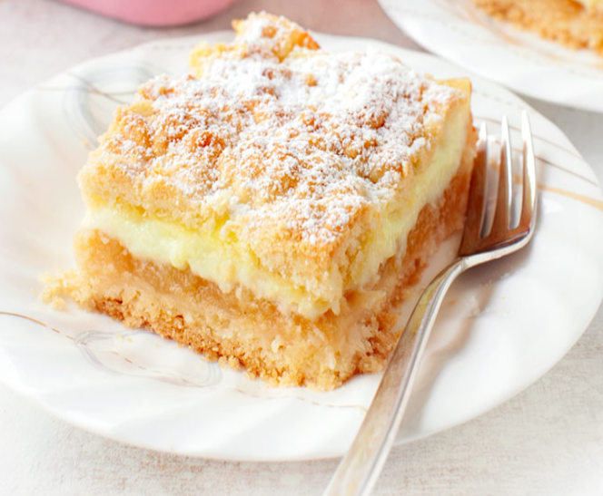

Szarlotka Z Budyniem
Składniki:
- 350 g mąki
- 200 g masła
- 1,5 łyżeczki proszku do pieczenia
- 70 g cukru pudru
- 1 jajko
- 1 budyń waniliowy
- 1/2 litra mleka
- 1200 g jabłek szara reneta
- 1 łyżeczka cynamonu
- cukier puder
Przygotowanie:
- Zagnieść ciasto kruche: mąkę wysypać na stolnicę, dodać pokrojone w kosteczkę zimne masło, proszek do pieczenia oraz
cukier puder. Siekać składniki nożem na drobną kruszonkę. Można też użyć miksera planetarnego.
- Dodać jajko i połączyć składniki w jednolite ciasto. Ciasto przekroić na pół, połówki zawinąć oddzielnie w folię
i włożyć do zamrażarki.
- Ugotować budyń zgodnie z instrukcją na opakowaniu, dodając wskazaną ilość cukru (pamiętamy o zagotowaniu mleka jak
i gotowego budyniu).
- Jabłka obrać, pokroić na ćwiartki i wyciąć gniazda nasienne. Pokroić na plasterki i włożyć do garnka. Dodać cynamon
i gotować pod przykryciem przez ok. 10 minut aż jabłka zmiękną, w międzyczasie od czasu do czasu zamieszać.
- Piekarnik nagrzać do 180 stopni C. Przygotować niedużą foremkę o wymiarach ok. 21 x 28 cm.
- Jedną z połówek ciasta wyjąć z zamrażarki i zetrzeć na grubej tarce na spód formy. Wyrównać i delikatnie uklepać.
- Na spód wyłożyć jabłka, a następnie budyń. Wyjąć drugą część ciasta z zamrażarki i zetrzeć na tarce bezpośrednio
na budyń.
- Wstawić do piekarnika i piec przez ok. 45 minut na złoty kolor. Posypać cukrem pudrem.
